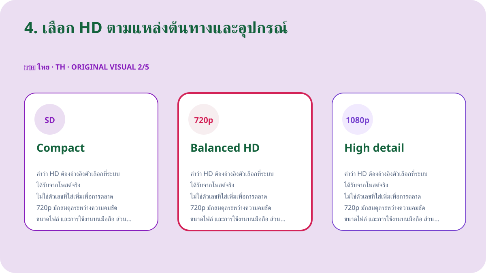
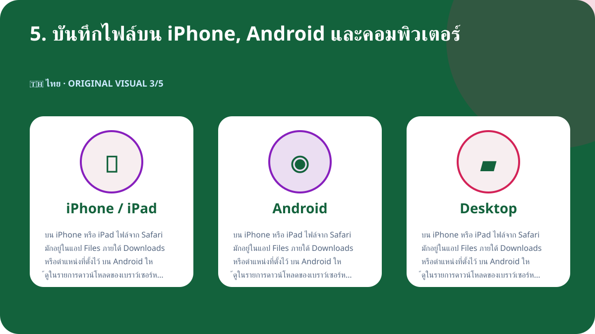
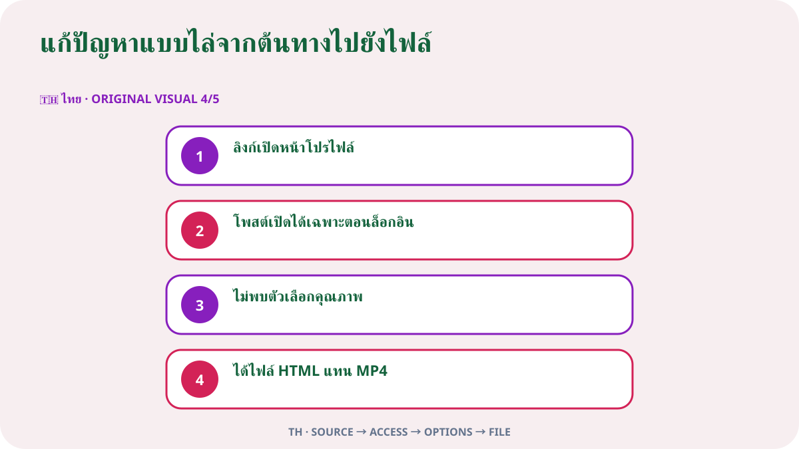

คำตอบแบบสั้น
เปิดโพสต์ X ที่มีวิดีโอและตรวจว่าเป็นโพสต์สาธารณะ จากนั้นกดแชร์แล้วเลือกคัดลอกลิงก์โพสต์ วางลิงก์นั้นใน Downloader-X เลือกไฟล์ MP4 ที่แสดงจริง และเปิดไฟล์หลังบันทึกเพื่อตรวจทั้งภาพและเสียง วิธีนี้ควรใช้กับวิดีโอของคุณเอง สื่อที่มีใบอนุญาต หรือสื่อที่เจ้าของอนุญาตให้เก็บเท่านั้น อย่ากรอกรหัสผ่าน X รหัสยืนยัน คุกกี้ หรือข้อมูลบัญชีลงในเว็บดาวน์โหลด
1. ตรวจว่าโพสต์เป็นสาธารณะและคุณมีสิทธิ์ใช้งาน
เริ่มจากหน้าโพสต์ต้นฉบับ ไม่ใช่หน้าโปรไฟล์ หน้าค้นหา หรือภาพตัวอย่างที่ส่งต่อมา เปิดลิงก์ในแท็บใหม่และเปรียบเทียบชื่อบัญชี ข้อความ ภาพปก และความยาววิดีโอให้ตรงกัน โพสต์สาธารณะหมายถึงผู้ชมทั่วไปสามารถเปิดดูตามการตั้งค่าปัจจุบัน แต่ไม่ได้หมายความว่าสามารถนำไปโพสต์ซ้ำ ตัดต่อ ขาย หรือใช้โฆษณาได้โดยอัตโนมัติ หากเป็นบัญชีป้องกัน โพสต์ถูกลบ ต้องเข้าสู่ระบบเฉพาะ หรือถูกจำกัดพื้นที่ ให้หยุดและขอไฟล์จากเจ้าของแทนการพยายามข้ามข้อจำกัด
ลิขสิทธิ์ การยินยอม และเครดิต
การมองเห็นแบบสาธารณะเป็นเพียงการตั้งค่าการเข้าถึง ไม่ใช่ใบอนุญาตใช้งาน เก็บวิดีโอเฉพาะของคุณเอง สื่อที่มีใบอนุญาตเหมาะสม หรือสื่อที่ได้รับอนุญาตชัดเจน หากต้องนำไปเผยแพร่ ตัดต่อ หรือใช้เชิงพาณิชย์ ให้ตรวจเงื่อนไขเพิ่มเติมและเก็บหลักฐานเป็นลายลักษณ์อักษร ระวังข้อมูลส่วนตัว สถานที่ส่วนตัว และบุคคลที่ปรากฏในคลิป โดยเฉพาะเด็กและเยาวชน และอย่าแสดงผลงานของผู้อื่นว่าเป็นของคุณ
2. คัดลอกลิงก์ของโพสต์ให้ถูกต้อง
ลิงก์ที่ดีควรชี้ไปยังโพสต์เดียวที่มีวิดีโอ กดเมนูแชร์ของ X แล้วเลือกคัดลอกลิงก์โพสต์ จากนั้นวางในแท็บใหม่หนึ่งครั้งเพื่อตรวจปลายทาง การตรวจนี้ช่วยแยกปัญหาลิงก์ผิดออกจากปัญหาระบบดาวน์โหลด และลดการกดซ้ำที่อาจสร้างไฟล์ไม่สมบูรณ์หลายรายการ
- เปิดโพสต์วิดีโอต้นฉบับและแตะวันที่หรือพื้นที่โพสต์เพื่อเข้าสู่หน้ารายการเดียว
- กดแชร์แล้วเลือกคัดลอกลิงก์โพสต์ แทนการพิมพ์ URL เอง
- ตรวจว่าโดเมนเป็น x.com หรือ twitter.com และมีรหัสสถานะของโพสต์
- เปิดลิงก์ในแท็บใหม่แล้วตรวจว่าบัญชี ข้อความ และวิดีโอตรงกับต้นฉบับ
- เก็บ URL ต้นทางและหลักฐานสิทธิ์ไว้คู่กับไฟล์ที่ดาวน์โหลด
3. วางลิงก์และเลือกผลลัพธ์ที่มีอยู่จริง
วางลิงก์ที่ตรวจแล้วลงในหน้า X Downloader และเริ่มประมวลผลเพียงครั้งเดียว รอให้ระบบแสดงตัวเลือกจริง แล้วตรวจชื่อโพสต์หรือภาพตัวอย่างก่อนกดดาวน์โหลด หากผลลัพธ์เป็นคนละโพสต์ให้ย้อนกลับไปคัดลอกใหม่ อย่าเชื่อปุ่มที่สัญญา 4K, 1080p หรือไม่มีลายน้ำเมื่อแหล่งต้นทางไม่ได้ส่งตัวเลือกนั้น ระบบที่ถูกต้องควรแจ้งข้อผิดพลาดตรงไปตรงมา ไม่ควรส่งหน้า HTML โปรแกรมติดตั้ง หรือไฟล์ปลอมมาแทนวิดีโอแล้วแสดงว่าสำเร็จ
วิดีโอสาธิตเฉพาะภาษาไทย
วิดีโอนี้สร้างใหม่สำหรับหน้านี้โดยใช้ภาพภาษาไทยคนละชุดกับภาษาอื่น แสดงลำดับคัดลอก วาง เลือกคุณภาพ และตรวจไฟล์
4. เลือก HD ตามแหล่งต้นทางและอุปกรณ์
คำว่า HD ต้องอ้างอิงตัวเลือกที่ระบบได้รับจากโพสต์จริง ไม่ใช่ตัวเลขที่ใส่เพิ่มเพื่อการตลาด 720p มักสมดุลระหว่างความคมชัด ขนาดไฟล์ และการใช้งานบนมือถือ ส่วน 1080p เหมาะกับจอใหญ่เมื่อแหล่งต้นทางมีให้จริง ความละเอียดเท่ากันอาจมีบิตเรต โค้ดेक และคุณภาพต่างกัน จึงควรเปิดไฟล์ตรวจ ไม่ตัดสินจากชื่อไฟล์อย่างเดียว หากต้องการเสียง ให้เลือกตัวเลือกที่ระบุว่ารวมวิดีโอและเสียง หรือทดสอบทันทีหลังบันทึก เพราะบางแหล่งแยกภาพกับเสียงในคุณภาพสูง

5. บันทึกไฟล์บน iPhone, Android และคอมพิวเตอร์
บน iPhone หรือ iPad ไฟล์จาก Safari มักอยู่ในแอป Files ภายใต้ Downloads หรือตำแหน่งที่ตั้งไว้ บน Android ให้ดูในรายการดาวน์โหลดของเบราว์เซอร์หรือแอป Files ส่วน Windows, macOS, Linux และ ChromeOS ให้ตรวจโฟลเดอร์ Downloads และประวัติการดาวน์โหลดของเบราว์เซอร์ ก่อนกดซ้ำควรดูว่าไฟล์ถูกบันทึกแล้วหรือยัง หากพื้นที่เก็บข้อมูลไม่พอ ให้ลบไฟล์ที่ไม่จำเป็นหรือเลือกคุณภาพต่ำลง อย่าติดตั้งแอปจัดการดาวน์โหลดที่ไม่รู้จักเพียงเพราะหน้าเว็บบังคับให้ติดตั้ง

6. ตรวจไฟล์หลังดาวน์โหลด
การดาวน์โหลดเสร็จเมื่อได้วิดีโอที่เปิดเล่นได้จริง ไม่ใช่แค่เมื่อแถบดาวน์โหลดหายไป ตรวจรายละเอียดต่อไปนี้ก่อนเก็บหรือส่งต่อไฟล์
- ชนิดไฟล์ตรงกับวิดีโอที่เลือก เช่น MP4 และไม่ใช่ HTML หรือโปรแกรมติดตั้ง
- ขนาดไฟล์ไม่เป็นศูนย์และสมเหตุสมผลกับระยะเวลาและคุณภาพ
- เปิดช่วงต้น กลาง และท้ายเพื่อตรวจภาพ ความยาว และเสียง
- ชื่อไฟล์ โฟลเดอร์ URL ต้นทาง และข้อมูลการอนุญาตถูกเก็บอย่างเป็นระเบียบ
ตรวจต้นทางก่อนเก็บไฟล์ระยะยาว
สำหรับงานหลายคลิป ให้จดชื่อบัญชี วันที่โพสต์ URL ถาวร หัวข้อสั้น คุณภาพที่เลือก ขนาดไฟล์ และเหตุผลที่คุณมีสิทธิ์เก็บไว้ การบันทึกข้อมูลนี้ช่วยป้องกันไฟล์หลงที่ไม่ทราบที่มา และทำให้ตรวจเครดิตหรือเงื่อนไขใบอนุญาตภายหลังได้ง่าย หากโพสต์อ้างคำพูดหรือเป็นเธรด ให้แน่ใจว่าคุณคัดลอก URL ของโพสต์ที่เป็นเจ้าของวิดีโอจริง ไม่ใช่ URL ของโพสต์ที่เพียงนำไปอ้างถึง
แก้ปัญหาแบบไล่จากต้นทางไปยังไฟล์

ลิงก์เปิดหน้าโปรไฟล์
กลับไปยังโพสต์วิดีโอแล้วใช้ปุ่มแชร์ โปรไฟล์มีหลายโพสต์จึงไม่ระบุสื่อที่ต้องการ
โพสต์เปิดได้เฉพาะตอนล็อกอิน
อาจเป็นโพสต์ป้องกันหรือมีข้อจำกัด อย่าแชร์รหัสผ่านหรือคุกกี้ ให้ขอไฟล์จากเจ้าของ
ไม่พบตัวเลือกคุณภาพ
ตรวจว่าโพสต์ยังอยู่ มีวิดีโอแบบเนทีฟ และ URL เปิดได้จริง จากนั้นรีเฟรชหนึ่งครั้ง
ได้ไฟล์ HTML แทน MP4
ลบไฟล์นั้น ห้ามเปลี่ยนนามสกุล แล้วคัดลอกลิงก์ใหม่และเลือกตัวเลือกวิดีโอที่ระบบแสดงจริง
วิดีโอไม่มีเสียง
ตรวจต้นฉบับ ระดับเสียง และเครื่องเล่นอื่น หากเลือกแบบวิดีโออย่างเดียว ให้เลือกไฟล์รวมเสียงเมื่อมีให้
ความปลอดภัยและความเป็นส่วนตัว
ขั้นตอนสำหรับโพสต์สาธารณะไม่ควรต้องใช้รหัสผ่าน X รหัสยืนยันสองชั้น การส่งออกคุกกี้ การควบคุมคอมพิวเตอร์ระยะไกล หรือการปิดระบบป้องกันเครื่อง หยุดทันทีหากเว็บไซต์ให้ดาวน์โหลดไฟล์ .exe, .dmg หรือส่วนขยายเบราว์เซอร์ที่ไม่เกี่ยวข้องกับวิดีโอ ตรวจโดเมนและชนิดไฟล์ก่อนเปิดทุกครั้ง บนอุปกรณ์ที่ใช้ร่วมกันควรย้ายไฟล์ที่ได้รับอนุญาตออกจากโฟลเดอร์สาธารณะและลบสำเนาชั่วคราวที่ไม่จำเป็น
จัดระเบียบเพื่อไม่ให้ไฟล์ซ้ำและไม่เสียพื้นที่
ตั้งชื่อไฟล์ด้วยหัวข้อสั้น ชื่อบัญชี วันที่ และคุณภาพ เช่น topic_creator_2026-08-30_720p.mp4 เก็บไฟล์ที่ตรวจแล้วในโฟลเดอร์โครงการและแยกจากไฟล์ชั่วคราว เมื่อยืนยันว่าไฟล์สมบูรณ์แล้วให้เก็บเฉพาะคุณภาพที่จำเป็น การกดหลายครั้งไม่ได้เพิ่มความคมชัดและอาจสร้างไฟล์ชื่อซ้ำ สำรองข้อมูลเฉพาะงานที่ต้องใช้ และรักษา URL ต้นทางกับเงื่อนไขเครดิตไว้ในไฟล์ข้อความหรือสเปรดชีตเดียวกัน
เช็กลิสต์ 60 วินาทีก่อนจบงาน
- URL เปิดโพสต์วิดีโอรายการที่ถูกต้อง
- โพสต์เป็นสาธารณะโดยไม่ต้องข้ามการควบคุมการเข้าถึง
- คุณเป็นเจ้าของหรือได้รับอนุญาตให้เก็บสื่อ
- ระบบไม่ขอรหัสผ่าน คุกกี้ หรือรหัสยืนยัน
- คุณภาพที่เลือกปรากฏในผลลัพธ์จริง
- อุปกรณ์มีพื้นที่ว่างเพียงพอ
- ไฟล์มีชนิดและขนาดสมเหตุสมผล
- ภาพและเสียงเล่นได้ครบ
- เก็บ URL และข้อมูลเครดิตไว้แล้ว
- การใช้งานต่อไปไม่เกินสิทธิ์ที่ได้รับ
คำถามที่พบบ่อย
ใช้ลิงก์ x.com และ twitter.com ได้หรือไม่
ใช้ได้เมื่อเป็น URL ถาวรของโพสต์สาธารณะเดียวกันและเปิดตรวจปลายทางแล้ว
ทำไมบางโพสต์ไม่มี 1080p
เพราะคุณภาพขึ้นอยู่กับไฟล์ต้นทางและตัวเลือกที่ระบบดึงได้จริง ไม่ควรสร้างคำสัญญาที่แหล่งต้นทางไม่มี
ดาวน์โหลดจากบัญชีป้องกันได้ไหม
ไม่ได้ คู่มือนี้รองรับเฉพาะโพสต์สาธารณะและไม่แนะนำการข้ามข้อจำกัด
ไฟล์บน iPhone อยู่ที่ไหน
มักอยู่ในแอป Files โฟลเดอร์ Downloads หรือตำแหน่งที่ตั้งไว้ใน Safari
ทำอย่างไรเมื่อได้ HTML
ลบไฟล์ ห้ามเปลี่ยนนามสกุล แล้วตรวจ URL และตัวเลือกวิดีโอใหม่
โพสต์สาธารณะนำไปโพสต์ซ้ำได้เลยหรือไม่
ไม่ได้ ต้องมีสิทธิ์หรือใบอนุญาตที่ครอบคลุมการเผยแพร่ซ้ำและการใช้งานที่ต้องการ
อ่านภาษาหรือคู่มือที่เกี่ยวข้อง
เริ่มจากลิงก์โพสต์สาธารณะที่ตรวจแล้ว
วาง URL ที่ถูกต้อง เลือกเฉพาะคุณภาพที่มีจริง และตรวจไฟล์ก่อนใช้งานทุกครั้ง
เริ่มใช้ Downloader-X สำหรับ X